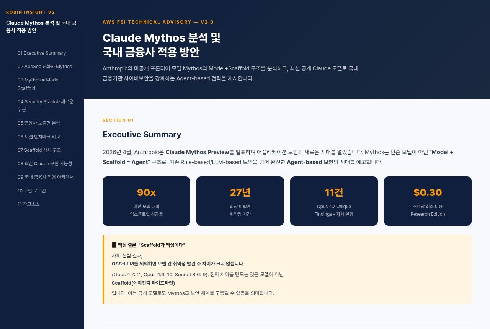
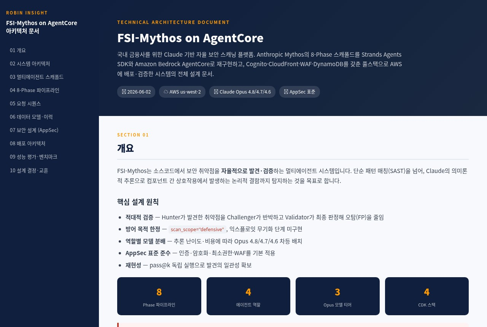
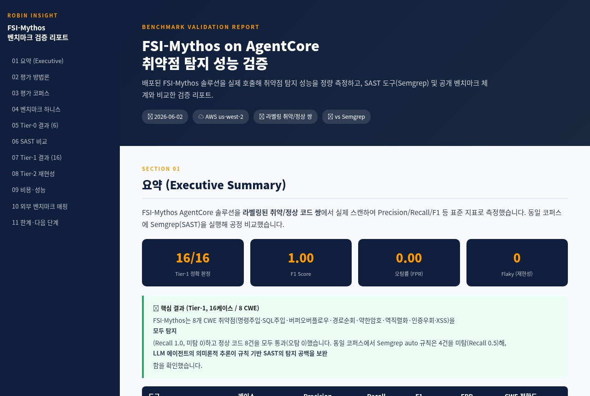
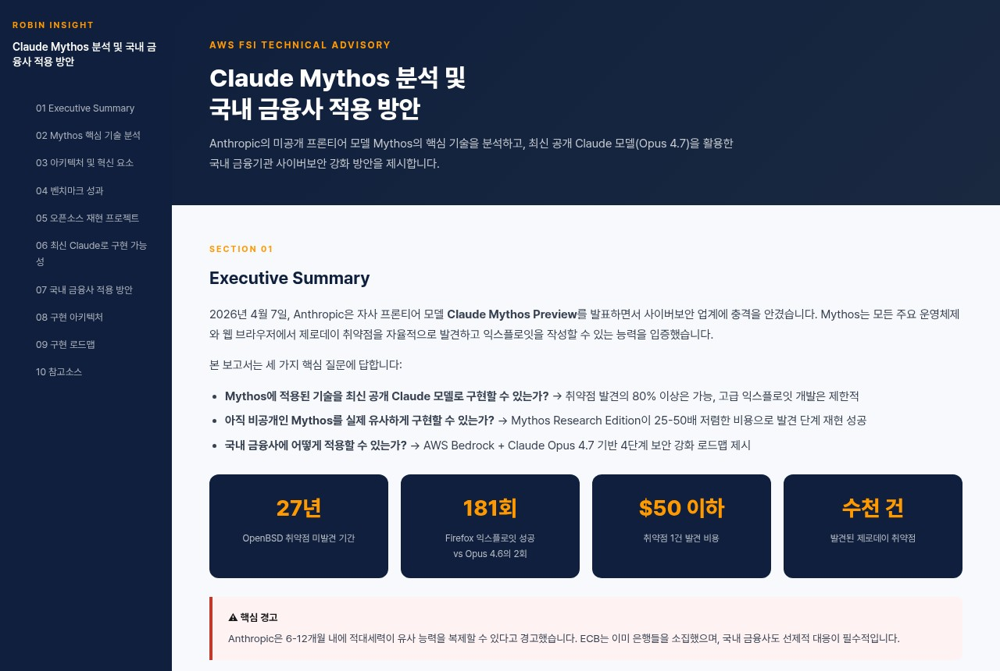

Claude Mythos 분석과 국내 금융사 적용 방안, FSI-Mythos 아키텍처 및 벤치마크 검증 자료를 한곳에 모았습니다. 카드를 클릭하면 해당 문서가 열립니다.
문서 목록




이 사이트는 Amazon S3(atom-workshop/mythos)에 호스팅되며 CloudFront로 배포됩니다.
위 카드를 클릭하면 해당 HTML 문서가 새 페이지로 열립니다. 브라우저 뒤로 가기로 이 허브로 돌아올 수 있습니다.
각 문서는 고정 URL을 가집니다. 예: /mythos/fsi-mythos-architecture.html 형태로 직접 접근·공유할 수 있습니다.
최신 배지가 붙은 문서가 현재 권장 버전입니다. v1은 변경 이력 참고용입니다.
https://d3nsxyown2wkel.cloudfront.net/mythos/
오프라인(인터넷 미접속) 사용: 각 카드의 PDF 다운로드 버튼으로 받은 파일은 네트워크 없이도 어디서나 열람할 수 있습니다. 인터넷이 차단된 환경에 배포할 때 활용하세요.
문서가 업데이트되어도 URL은 동일하게 유지됩니다. 캐시로 인해 변경이 즉시 반영되지 않으면 브라우저 강력 새로고침(Ctrl/Cmd + Shift + R)을 해주세요.